# in your CS02 repo, the file is at "data/pm25_data.csv"
pm <- read_csv("OCS_data/data/raw/pm25_data.csv") |>
# these are ID codes, not measurements
mutate(across(c(id, fips, zcta), as.factor),
# from EDA: most cities have only 1-2 monitors; "Not in a city" is the biggest group
city = case_when(city == "Not in a city" ~ "Not in a city",
city != "Not in a city" ~ "In a city"))14-cs02-analysis
CS02: Predicting Air Pollution (Analysis)
Q&A
Q: How do multiple interaction effects work (3-4 variables interacting with each other)?
A: Consider this (maybe-too-familiar-at-week-7-in-the-quarter) but ultimately made-up example: predicting exam score from hours studied, hours of sleep, and cups of coffee.
There are two interactions to fit:
- studying × sleep: studying pays off more when you’re well rested. But….an extra hour of studying on 4 hours of sleep doesn’t help as much as the same hour on 8.
- coffee × sleep: coffee helps more when you’re short on sleep. If you’re already rested, it does less.
So the model would be:
score = β₀ + β₁study + β₂sleep + β₃coffee + β₄(study × sleep) + β₅*(coffee × sleep)
With some made-up numbers:
Say β₀ = 40, β₁ = 3, β₂ = 2, β₃ = 4, β₄ = 0.5, β₅ = −0.5.
Slope of studying = 3 + 0.5·sleep:
- On 4 hrs of sleep: each study hour is worth 5 points
- On 8 hrs: each study hour is worth 7 points
Slope of coffee = 4 − 0.5·sleep:
- On 4 hrs of sleep: each cup is worth 2 points
- On 8 hrs: each cup is worth 0 points
Slope of sleep = 2 + 0.5·study − 0.5·coffee <- sleep depends on two variables at once b/c it’s in both interaction terms)
Note: the above is NOT a three-way interaction. It’s two two-way interactions. A three-way term (study × sleep × coffee) would mean something like “the study–sleep synergy itself changes with coffee.” Even that barely makes sense as I put it in the notes. In other words, three way interaction terms are hard to interpret and are therefore infrequently used.
I added this as a third tab on the MLR explainer
Q: Can we see some prior final projects?
I haven’t asked students to share their work here (although I always intend to..) so sharing a few questions for now:
- With what accuracy can we predict the money laundering risk score of a black money transaction?
- What is the relationship between a neighborhood’s walkability and its crime rate?
- Does Twitter usage affect professional tennis player performances, and can we determine a cutoff?
- What are the key predictors of gun-related deaths across different regions in the U.S.?
- How do Statcast metrics influence the home run performance of San Diego Padres players? Can a predictive model based on these metrics accurately identify top-performing players and explain discrepancies between expected and actual home runs?
Course Announcements
Due Dates:
- Lab 07 due today 11/13 (11:59 PM)
- 🔘 Lecture Participation survey “due” after class
Notes:
- MLR w/ interaction artifact
- CS01 scores/feedback posted (Feedback as issue on repo)
- Next Sun: CS02 + Final Project Rough Draft
- Repos created
- Class next Fri will be time to work on CS02
Agenda
Day 1 · Fri 11/13
- Split the data into training and testing sets
- Pre-process with a
recipe(): roles,step_*(),prep(),bake() - Make sure the recipe will work on new data
- Fit and assess a linear regression (
parsnip+workflow())
Day 2 · Mon 11/16
- Cross-validation
- Random forest + tuning
- Final evaluation on the test set: is that good? For whom?
- Mapping our results
- What this means for your case study
Question
With what accuracy can we predict US annual average air pollution concentrations?
Analysis
Building our tidymodels knowledge:

The Data
- Recoding
cityis a decision we made during EDA (remembercount(city, sort = TRUE)?) - It’s a fixed rule that doesn’t learn anything from the data, so it’s OK to do before splitting (unlike, say, filling in missing values with the mean)
Data Splitting
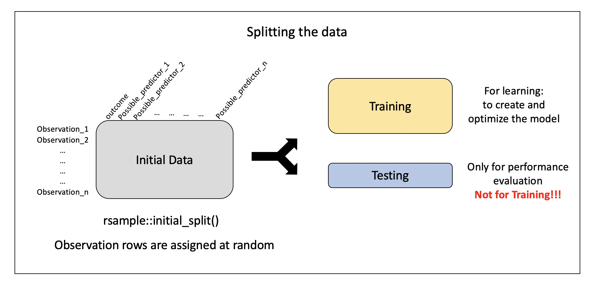
. . .
Specify the split:
set.seed(1234)
pm_split <- rsample::initial_split(data = pm, prop = 2/3)
pm_split<Training/Testing/Total>
<584/292/876>set.seed<- ensures we all get the exact same random split- output displayed:
<training data sample number, testing data sample number, original sample number>
More on how people decide what proportions to use for data splitting here
Split the Data
train_pm <- rsample::training(pm_split)
test_pm <- rsample::testing(pm_split)
# Scroll through the output!
count(train_pm, state)# A tibble: 49 × 2
state n
<chr> <int>
1 Alabama 13
2 Arizona 12
3 Arkansas 8
4 California 55
5 Colorado 10
6 Connecticut 12
# ℹ 43 more rows❓ What do you observe about the output?
Note
We just split monitors at random. Keep that in mind: at the end of this case study we’ll ask whether a random split is a fair test for predicting places with no monitors.
Pre-processing: recipe() + bake()
Need to:
- specify predictors vs. outcome
- encode categorical variables as numbers
- remove redundant variables (feature engineering)
. . .
recipe provides a standardized format for a sequence of steps for pre-processing the data
. . .
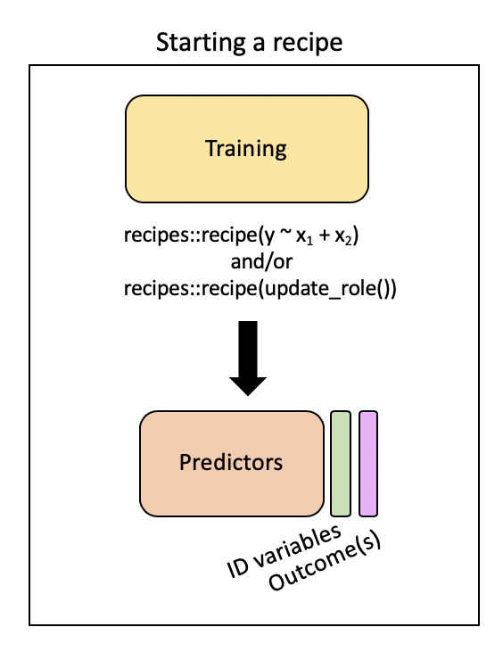
Step 1: Specify variable roles
The simplest approach…
simple_rec <- train_pm |>
recipes::recipe(value ~ .)
simple_rec── Recipe ────────────────────────────────────────────────────────────── Inputs Number of variables by roleoutcome: 1
predictor: 49. . .
…but we need to specify which column includes ID information
simple_rec <- train_pm |>
recipes::recipe(value ~ .) |>
recipes::update_role(id, new_role = "id variable")
simple_rec── Recipe ────────────────────────────────────────────────────────────── Inputs Number of variables by roleoutcome: 1
predictor: 48
id variable: 1. . .
…and which are our predictors and which is our outcome
simple_rec <- recipe(train_pm) |>
update_role(everything(), new_role = "predictor") |>
update_role(value, new_role = "outcome") |>
update_role(id, new_role = "id variable")
simple_rec── Recipe ────────────────────────────────────────────────────────────── Inputs Number of variables by roleoutcome: 1
predictor: 48
id variable: 1❓ Can someone summarize what this code is specifying?
. . .
Summarizing our recipe thus far:
summary(simple_rec)# A tibble: 50 × 4
variable type role source
<chr> <list> <chr> <chr>
1 id <chr [3]> id variable original
2 value <chr [2]> outcome original
3 fips <chr [3]> predictor original
4 lat <chr [2]> predictor original
5 lon <chr [2]> predictor original
6 state <chr [3]> predictor original
# ℹ 44 more rowsStep 2: Pre-process with step*()
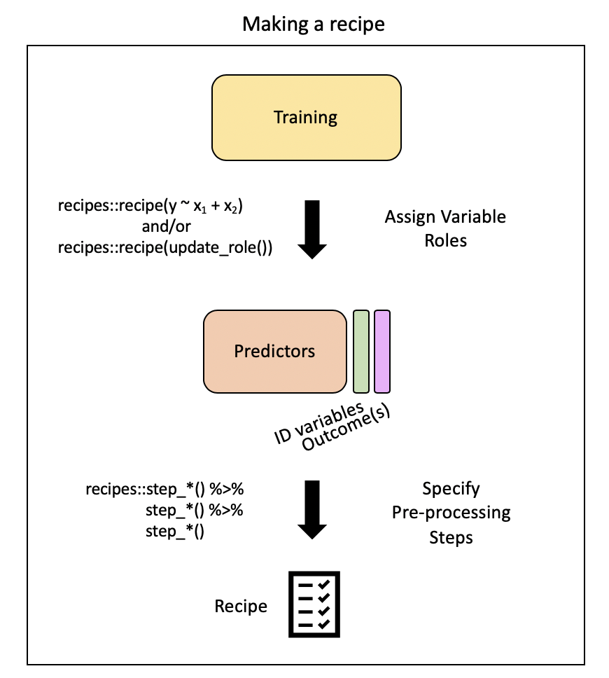
Steps
There are step functions for imputation, transformation, encoding, filtering, and much more: see the full list.
Reference: kinds of step functions
There are step functions for a variety of purposes:
- Imputation – filling in missing values based on the existing data
- Transformation – changing all values of a variable in the same way, typically to make it more normal or easier to interpret
- Discretization – converting continuous values into discrete or nominal values - binning for example to reduce the number of possible levels (However this is generally not advisable!)
- Encoding / Creating Dummy Variables – creating a numeric code for categorical variables (More on one-hot and Dummy Variables encoding)
- Data type conversions – which means changing from integer to factor or numeric to date etc.
- Interaction term addition to the model – which means that we would be modeling for predictors that would influence the capacity of each other to predict the outcome
- Normalization – centering and scaling the data to a similar range of values
- Dimensionality Reduction/ Signal Extraction – reducing the space of features or predictors to a smaller set of variables that capture the variation or signal in the original variables (ex. Principal Component Analysis and Independent Component Analysis)
- Filtering – filtering options for removing variables (ex. remove variables that are highly correlated to others or remove variables with very little variance and therefore likely little predictive capacity)
- Row operations – performing functions on the values within the rows (ex. rearranging, filtering, imputing)
- Checking functions – Gut checks to look for missing values, to look at the variable classes etc.
This link and this link show the many options for recipe step functions.
Selecting Variables
There are several ways to select what variables to apply steps to:
- Using
tidyselectmethods:contains(),matches(),starts_with(),ends_with(),everything(),num_range()
- Using the type:
all_nominal(),all_numeric(),has_type() - Using the role:
all_predictors(),all_outcomes(),has_role() - Using the name - use the actual name of the variable/variables of interest
One-hot Encoding
One-hot encoding categorical variables:
simple_rec |>
step_dummy(state, county, city, zcta, one_hot = TRUE)── Recipe ────────────────────────────────────────────────────────────── Inputs Number of variables by roleoutcome: 1
predictor: 48
id variable: 1── Operations • Dummy variables from: state, county, city, zcta❓ Can anyone explain what one-hot encoding does?
. . .
fipsincludes numeric code for state and county, so it’s another way to specify county- so, we’ll change
fips’ role - we get to decide what to call it (
"county id")
simple_rec |>
update_role("fips", new_role = "county id")── Recipe ────────────────────────────────────────────────────────────── Inputs Number of variables by roleoutcome: 1
predictor: 47
county id: 1
id variable: 1. . .
Removing variables with near-zero variance:
simple_rec |>
step_nzv(all_predictors(), -CMAQ, -aod)── Recipe ────────────────────────────────────────────────────────────── Inputs Number of variables by roleoutcome: 1
predictor: 48
id variable: 1── Operations • Sparse, unbalanced variable filter on: all_predictors(), ...- specifying to KEEP
CMAQandaod, even if a filter would flag them: they’re our two direct measures of air pollution (a physics-based model estimate and a satellite measurement), so domain knowledge says they stay
. . .
Removing highly correlated variables:
simple_rec |>
step_corr(all_predictors(), -CMAQ, -aod)── Recipe ────────────────────────────────────────────────────────────── Inputs Number of variables by roleoutcome: 1
predictor: 48
id variable: 1── Operations • Correlation filter on: all_predictors(), -CMAQ, -aodPutting our recipe together
simple_rec <- simple_rec |>
update_role("fips", new_role = "county id") |>
step_dummy(state, county, city, zcta, one_hot = TRUE) |>
step_nzv(all_predictors(), -CMAQ, -aod) |>
step_corr(all_predictors(), -CMAQ, -aod)
simple_rec── Recipe ────────────────────────────────────────────────────────────── Inputs Number of variables by roleoutcome: 1
predictor: 47
county id: 1
id variable: 1── Operations • Dummy variables from: state, county, city, zcta• Sparse, unbalanced variable filter on: all_predictors(), ...• Correlation filter on: all_predictors(), -CMAQ, -aodNote: order of steps matters. Removing (near-)constant columns before computing correlations avoids “the standard deviation is zero” warnings from step_corr().
Step 3: Running the pre-processing (prep)
prep() estimates everything the recipe needs from the training data (e.g., which columns have near-zero variance, which are highly correlated):
verbose = TRUE: print each step as it runsretain = TRUE: keep the processed training data, so we can look at it withbake()
prepped_rec <- prep(simple_rec,
verbose = TRUE,
retain = TRUE )oper 1 step dummy [training]
oper 2 step nzv [training]
oper 3 step corr [training]
The retained training set is ~ 0.27 Mb in memory.names(prepped_rec) [1] "var_info" "term_info" "steps"
[4] "template" "levels" "retained"
[7] "requirements" "tr_info" "orig_lvls"
[10] "last_term_info"
Reference: more on prep() arguments and output
There are some important arguments to know about:
training- you must supply a training data set to estimate parameters for pre-processing operations (recipe steps) - this may already be included in your recipe - as is the case for usfresh- iffresh=TRUE, will retrain and estimate parameters for any previous steps that were already prepped if you add more steps to the recipe (default isFALSE)verbose- ifverbose=TRUE, shows the progress as the steps are evaluated and the size of the pre-processed training set (default isFALSE)retain- ifretain=TRUE, then the pre-processed training set will be saved within the recipe (as template). This is good if you are likely to add more steps and do not want to rerun theprep()on the previous steps. However this can make the recipe size large. This is necessary if you want to actually look at the pre-processed data (default isTRUE)
This output includes a lot of information:
- the
stepsthat were run
- the original variable info (
var_info)
- the updated variable info after pre-processing (
term_info) - the new
levelsof the variables - the original levels of the variables (
orig_lvls) - info about the training data set size and completeness (
tr_info)
Step 4: Extract pre-processed training data using bake()
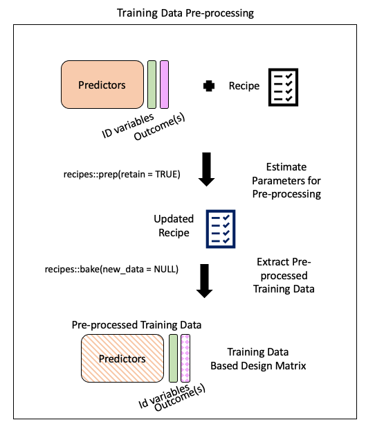
bake(): apply our modeling steps (in this case just pre-processing on the training data) and see what it would do to the data
. . .
baked_train <- bake(prepped_rec, new_data = NULL)
dim(baked_train)[1] 584 39names(baked_train) [1] "id" "value"
[3] "fips" "lat"
[5] "lon" "CMAQ"
[7] "zcta_area" "zcta_pop"
[9] "imp_a500" "imp_a15000"
[11] "county_area" "county_pop"
[13] "log_dist_to_prisec" "log_pri_length_5000"
[15] "log_pri_length_10000" "log_pri_length_25000"
[17] "log_prisec_length_500" "log_prisec_length_1000"
[19] "log_prisec_length_5000" "log_prisec_length_10000"
[21] "log_prisec_length_25000" "log_nei_2008_pm10_sum_10000"
[23] "log_nei_2008_pm10_sum_15000" "log_nei_2008_pm10_sum_25000"
[25] "popdens_county" "popdens_zcta"
[27] "nohs" "somehs"
[29] "hs" "somecollege"
[31] "associate" "bachelor"
[33] "grad" "pov"
[35] "hs_orless" "urc2006"
[37] "aod" "state_California"
[39] "city_Not.in.a.city" new_data = NULLspecifies that we’re not (yet) looking at our testing data- We only have 39 variables (36 predictors + 2 id variables + outcome)
state,county,city, andzctabecame 0/1 columns (one-hot encoding)…thenstep_nzv()dropped most of them, since nearly every value is 0state_Californiais the only state column left: California has by far the most monitors, so it’s the only state column that isn’t near-zero variance
Step 5: Will this recipe work on new data?
bake()takes a trained recipe and applies the operations to a data set to create a design matrix. For example: it applies the centering to new data sets using these means used to create the recipe. -tidymodelsdocumentation
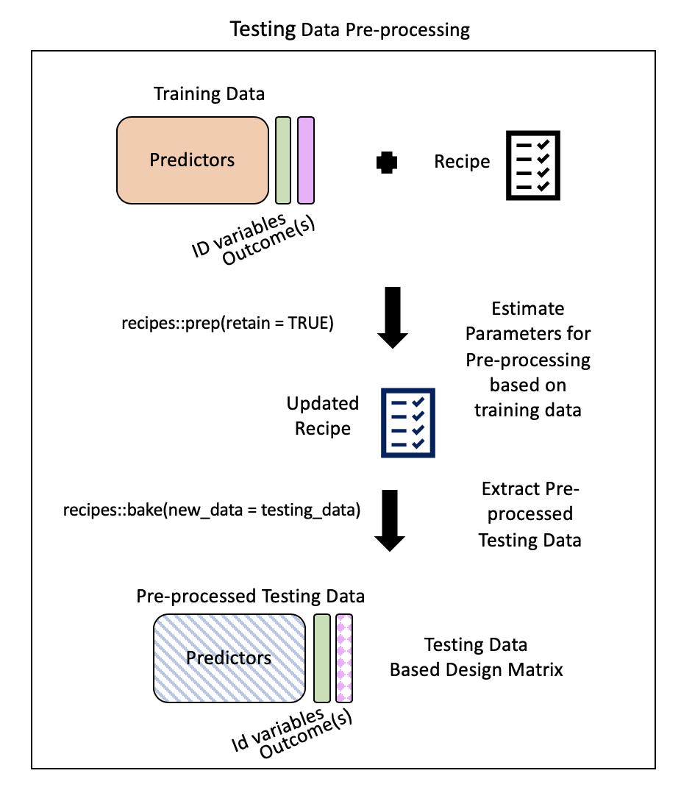
- Eventually, the recipe gets applied to the test set (and to any new monitor)…but we won’t bake the test set ourselves:
last_fit()does that, once, at the very end - So we ask, using only the training data: will this recipe break on data it hasn’t seen?
Checking for new levels (training data only)
train_pm |>
summarize(monitors = n(),
across(c(state, county, city, zcta), n_distinct))# A tibble: 1 × 5
monitors state county city zcta
<int> <int> <int> <int> <int>
1 584 49 360 2 569❓ What happens when a new monitor shows up in a county or zip code the recipe has never seen?
. . .
zctahas nearly one level per monitor, andcountyhas hundreds of levels with only a monitor or two each: a new monitor will very likely bring a zip code (or county) the recipe has never seenstep_dummy()can’t encode a level it never saw, so those rows becomeNAcityis fine: we recoded it to two levels, and both show up in the training datastateis mostly fine…but a state with very few monitors (Maine has just one!) could show up only in new data. We’ll handle that withstep_novel()in the random forest recipe.
Updating our recipe
Putting it all together:
novel_rec <- recipe(train_pm) |>
update_role(everything(), new_role = "predictor") |>
update_role(value, new_role = "outcome") |>
update_role(id, new_role = "id variable") |>
update_role("fips", new_role = "county id") |>
step_rm(county, zcta) |>
step_dummy(state, city) |>
step_nzv(all_predictors()) |>
step_corr(all_numeric_predictors()) |>
step_lincomb(all_numeric_predictors()). . .
What changed?
step_rm(county, zcta): with so few monitors per county/zip code, these can’t generalize to new monitors (they’d bring levels the recipe has never seen)step_dummy()withoutone_hot: for linear regression, one-hot encoding adds a redundant column (it’s perfectly predictable from the others + the intercept)all_predictors()/all_numeric_predictors()(notall_numeric()): never let a filter step touch the outcomestep_lincomb(): removes exact linear combinations (e.g.,hs_orless=nohs+somehs+hs), whichlm()would otherwise report asNA- We no longer protect
CMAQandaodfrom the filters. Checknames(baked_train)below: did they survive?
. . .
re-bake()
prepped_rec <- prep(novel_rec, verbose = TRUE, retain = TRUE)oper 1 step rm [training]
oper 2 step dummy [training]
oper 3 step nzv [training]
oper 4 step corr [training]
oper 5 step lincomb [training]
The retained training set is ~ 0.27 Mb in memory.baked_train <- bake(prepped_rec, new_data = NULL). . .
Looking at the output
dim(baked_train)[1] 584 38names(baked_train) [1] "id" "value"
[3] "fips" "lat"
[5] "lon" "CMAQ"
[7] "zcta_area" "zcta_pop"
[9] "imp_a500" "imp_a15000"
[11] "county_area" "county_pop"
[13] "log_dist_to_prisec" "log_pri_length_5000"
[15] "log_pri_length_10000" "log_pri_length_25000"
[17] "log_prisec_length_500" "log_prisec_length_1000"
[19] "log_prisec_length_5000" "log_prisec_length_10000"
[21] "log_prisec_length_25000" "log_nei_2008_pm10_sum_10000"
[23] "log_nei_2008_pm10_sum_15000" "log_nei_2008_pm10_sum_25000"
[25] "popdens_county" "popdens_zcta"
[27] "nohs" "somehs"
[29] "hs" "somecollege"
[31] "associate" "bachelor"
[33] "grad" "pov"
[35] "urc2006" "aod"
[37] "state_California" "city_Not.in.a.city" Specifying our model (parsnip)
There are four things we need to define about our model:
- The type of model (using specific functions in parsnip like
rand_forest(),logistic_reg()etc.)
- The package or engine that we will use to implement the type of model selected (using the
set_engine()function) - The mode of learning - classification or regression (using the
set_mode()function) - Any arguments necessary for the model/package selected (using the
set_args()function - for example themtry =argument for random forest which is the number of variables to be used as options for splitting at each tree node)
Step 1: Specify the model
- We’ll start with linear regression, but move to random forest
- See here for modeling options in
parsnip.
lm_PM_model <- parsnip::linear_reg() |>
parsnip::set_engine("lm") |>
set_mode("regression")
lm_PM_modelLinear Regression Model Specification (regression)
Computational engine: lm Step 2: Bundle recipe + model into a workflow
workflowspackage allows us to keep track of both our pre-processing steps and our model specification- It also allows us to implement fancier optimizations in an automated way and it can also handle post-processing operations.
PM_wflow <- workflows::workflow() |>
workflows::add_recipe(novel_rec) |>
workflows::add_model(lm_PM_model)
PM_wflow══ Workflow ══════════════════════════════════════════════════════════
Preprocessor: Recipe
Model: linear_reg()
── Preprocessor ──────────────────────────────────────────────────────
5 Recipe Steps
• step_rm()
• step_dummy()
• step_nzv()
• step_corr()
• step_lincomb()
── Model ─────────────────────────────────────────────────────────────
Linear Regression Model Specification (regression)
Computational engine: lm ❓ Who can explain the difference between a recipe, baking, and a workflow?
Step 3: Fit the workflow
PM_wflow_fit <- parsnip::fit(PM_wflow, data = train_pm)- One call does it all on the training data:
prep()the recipe,bake()the training data, then fit the model
Step 4: Assess model fit
wflowoutput <- PM_wflow_fit |>
extract_fit_parsnip() |>
broom::tidy()
wflowoutput# A tibble: 36 × 5
term estimate std.error statistic p.value
<chr> <dbl> <dbl> <dbl> <dbl>
1 (Intercept) 2.91e+ 2 1.18e+ 2 2.46 1.41e- 2
2 lat 3.26e- 2 2.28e- 2 1.43 1.53e- 1
3 lon 1.57e- 2 1.01e- 2 1.56 1.19e- 1
4 CMAQ 2.49e- 1 3.98e- 2 6.25 8.25e-10
5 zcta_area -3.48e-10 1.60e-10 -2.18 3.00e- 2
6 zcta_pop 1.00e- 5 5.33e- 6 1.88 6.08e- 2
# ℹ 30 more rows- We have fit our model on our training data
- We have created a model to predict values of air pollution based on the predictors that we have included
- Careful interpreting individual coefficients: many predictors are correlated, so each coefficient depends on what else is in the model. Our goal here is prediction, not inference (remember lecture 12)
Step 4 (cont.): Variable importance
Understanding what variables are most important in our model…
PM_wflow_fit |>
extract_fit_parsnip() |>
vip::vip(num_features = 10)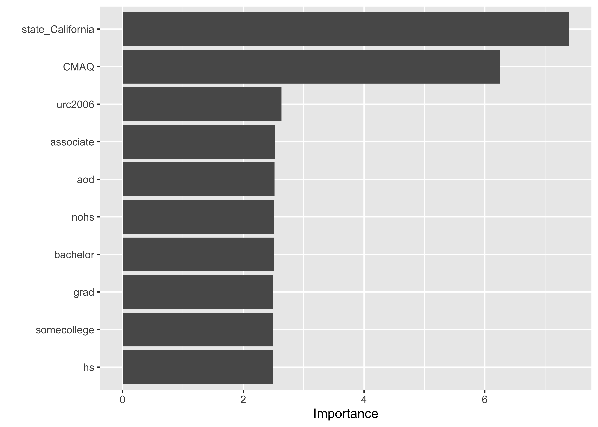
- For
lm, “importance” is the absolute value of each coefficient’s t-statistic (its size relative to its uncertainty) - It tells us what the model leans on, not what causes pollution
Step 4 (cont.): A closer look at California
ca_plot <- baked_train |>
mutate(state_California = as.factor(state_California)) |>
mutate(state_California = recode(state_California,
"0" = "Not California",
"1" = "California")) |>
ggplot(aes(x = state_California, y = value)) +
geom_boxplot() +
geom_jitter(width = .05) +
xlab("Location of Monitor")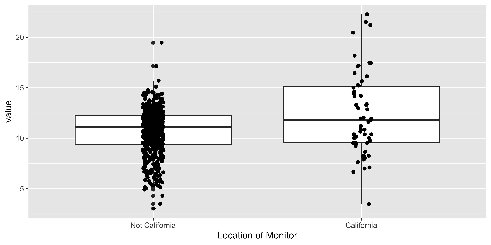
- California is the only state with enough monitors for its dummy (
state_California) to survivestep_nzv() - California monitors read higher on average, which is why the model finds
state_Californiauseful
From model to predictions
Remember: we can think of machine learning (ML) as an optimization problem: we try to minimize the distance between our predicted outcome \(\hat{Y} = f(X)\) and actual outcome \(Y\) using our features (or predictor variables) \(X\) as input to a function \(f\) that we want to estimate.
\[d(Y, \hat{Y})\]
. . .
Let’s pull out our predicted outcome values \(\hat{Y} = f(X)\) from the model we fit.
wf_fitted_values <- PM_wflow_fit |>
augment(new_data = train_pm) |>
select(value, .fitted = .pred)
head(wf_fitted_values)# A tibble: 6 × 2
value .fitted
<dbl> <dbl>
1 11.7 12.0
2 6.96 9.19
3 13.3 12.6
4 10.7 10.3
5 14.5 11.9
6 12.2 9.44Visualizing Model Performance
wf_fitted_values |>
ggplot(aes(x = value, y = .fitted)) +
geom_point(alpha = 0.5) +
geom_abline(linetype = "dashed") + # perfect predictions fall on this line
labs(x = "Measured PM2.5 (µg/m³)", y = "Predicted PM2.5 (µg/m³)")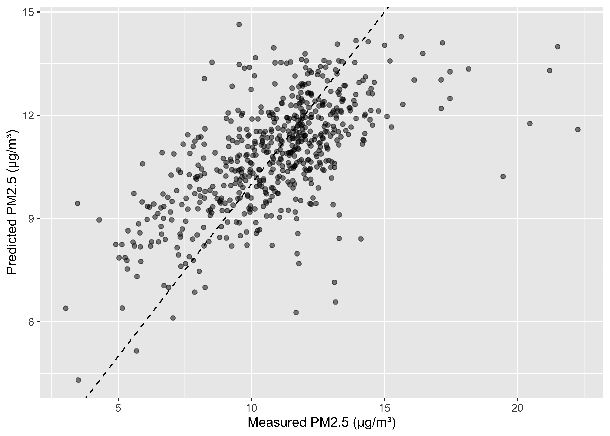
❓ What do you notice about/learn from these results?
Quantifying Model Performance
\[RMSE = \sqrt{\frac{\sum_{i=1}^{n}{(\hat{y}_i - y_i)}^2}{n}}\]
. . .
The yardstick package’s metrics() function calculates RMSE (plus \(R^2\) and MAE):
yardstick::metrics(wf_fitted_values,
truth = value, estimate = .fitted)# A tibble: 3 × 3
.metric .estimator .estimate
<chr> <chr> <dbl>
1 rmse standard 1.98
2 rsq standard 0.392
3 mae standard 1.47 - These are training metrics: the model is being graded on the same data it was fit to, so they’re optimistic by design
- \(R^2\) suggests the model explains about 39% of the variance in the training data
- MAE: on average, predictions are off by about 1.47 µg/m³ (values range from 3 to 22)
- To know how the model does on data it hasn’t seen, we need cross-validation (next!)
. . .
For scale, a baseline: predict every monitor with the overall mean
baseline_rmse <- sqrt(mean((train_pm$value - mean(train_pm$value))^2))
baseline_rmse[1] 2.543419- Any useful model needs to beat an RMSE of about 2.54
Day 2 · Mon 11/16
Cross-validation, random forest & tuning.
Cross-Validation
Resampling + Re-partitioning:
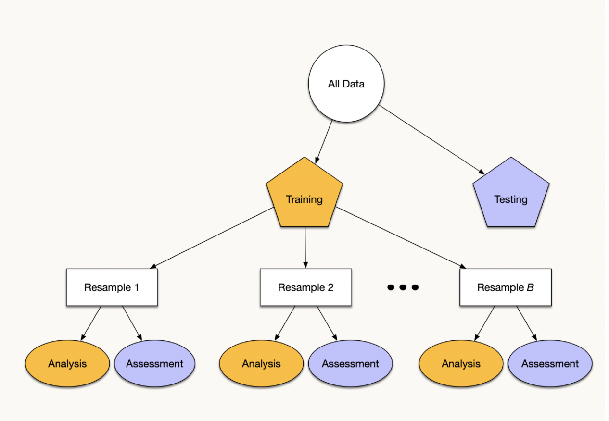
. . .
Preparing the data for cross-validation:
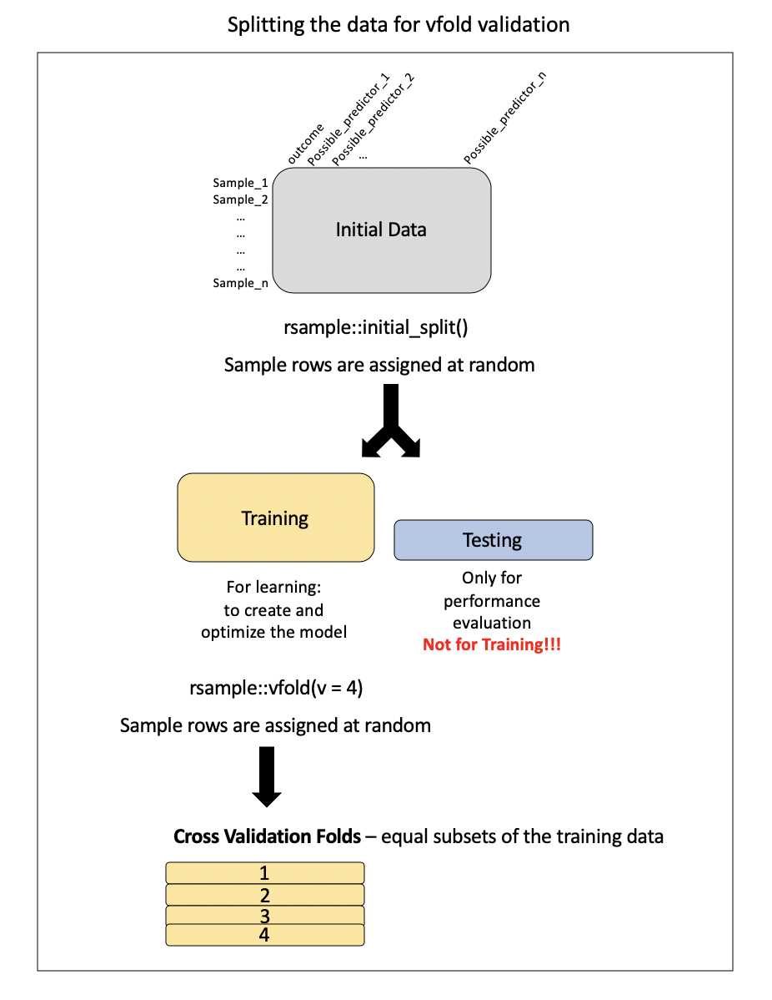
Note: this is called v-fold or k-fold CV
Implementing in rsample()
set.seed(1234)
vfold_pm <- rsample::vfold_cv(data = train_pm, v = 4)
vfold_pm# 4-fold cross-validation
# A tibble: 4 × 2
splits id
<list> <chr>
1 <split [438/146]> Fold1
2 <split [438/146]> Fold2
3 <split [438/146]> Fold3
4 <split [438/146]> Fold4. . .
pull(vfold_pm, splits)[[1]]
<Analysis/Assess/Total>
<438/146/584>
[[2]]
<Analysis/Assess/Total>
<438/146/584>
[[3]]
<Analysis/Assess/Total>
<438/146/584>
[[4]]
<Analysis/Assess/Total>
<438/146/584>. . .
Visualizing this process:
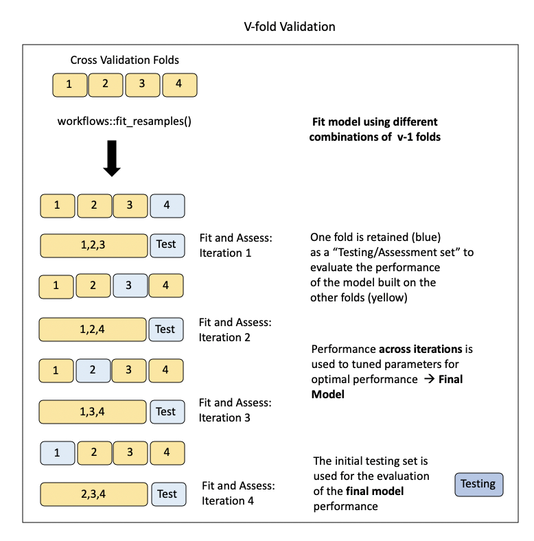
Model Assessment on v-folds
Where this workflow thing really shines…
resample_fit <- tune::fit_resamples(PM_wflow, vfold_pm). . .
Average performance across the four folds:
collect_metrics(resample_fit)# A tibble: 2 × 6
.metric .estimator mean n std_err .config
<chr> <chr> <dbl> <int> <dbl> <chr>
1 rmse standard 2.12 4 0.0402 Preprocessor1_Model1
2 rsq standard 0.306 4 0.0253 Preprocessor1_Model1- Training RMSE was 1.98; cross-validated RMSE is 2.12. That gap is how optimistic training metrics are.
- Compare both to the baseline of predicting the mean (2.54)
A different model?
Random Forest
Fitting a different model…is based on a decision tree:

[source]
But not just one tree…
But…in the case of random forest:
- multiple decision trees are created (hence: forest),
- each tree is built using a random subset of the training data (with replacement) (hence: random)
- at each split, a tree only considers a random subset of the predictors (that’s
mtry, which we’ll tune soon) - helps to keep the algorithm from overfitting the data
- The mean of the predictions from each of the trees is used in the final output.
Visualizing a RF

Updating our recipe()
RF_rec <- recipe(train_pm) |>
update_role(everything(), new_role = "predictor")|>
update_role(value, new_role = "outcome")|>
update_role(id, new_role = "id variable") |>
update_role("fips", new_role = "county id") |>
step_rm(county, zcta) |>
step_novel(state) |>
step_string2factor(city) |>
step_nzv(all_predictors()) |>
step_corr(all_numeric_predictors())- can use our categorical data as is (no dummy coding)
county&zctaare still removed: too few monitors per level (andrandomForestcan’t handle factors with more than 53 levels)step_novel(state): during cross-validation, a fold’s assessment set can include a state its analysis set never saw (Maine has one monitor!).step_novel()assigns any unseen level to a new level ("new") instead of throwing an error
Model Specification
Model parameters:
mtry- The number of predictor variables (or features) that will be randomly sampled at each split when creating the tree models. The default number for regression analyses is the number of predictors divided by 3.min_n- The minimum number of data points in a node that are required for the node to be split further.trees- the number of trees in the ensemble
. . .
# install.packages("randomForest")
RF_PM_model <- parsnip::rand_forest(mtry = 10, min_n = 3) |>
set_engine("randomForest") |>
set_mode("regression")
RF_PM_modelRandom Forest Model Specification (regression)
Main Arguments:
mtry = 10
min_n = 3
Computational engine: randomForest Workflow
RF_wflow <- workflows::workflow() |>
workflows::add_recipe(RF_rec) |>
workflows::add_model(RF_PM_model)
RF_wflow══ Workflow ══════════════════════════════════════════════════════════
Preprocessor: Recipe
Model: rand_forest()
── Preprocessor ──────────────────────────────────────────────────────
5 Recipe Steps
• step_rm()
• step_novel()
• step_string2factor()
• step_nzv()
• step_corr()
── Model ─────────────────────────────────────────────────────────────
Random Forest Model Specification (regression)
Main Arguments:
mtry = 10
min_n = 3
Computational engine: randomForest Fit the Data
RF_wflow_fit <- parsnip::fit(RF_wflow, data = train_pm)
RF_wflow_fit══ Workflow [trained] ════════════════════════════════════════════════
Preprocessor: Recipe
Model: rand_forest()
── Preprocessor ──────────────────────────────────────────────────────
5 Recipe Steps
• step_rm()
• step_novel()
• step_string2factor()
• step_nzv()
• step_corr()
── Model ─────────────────────────────────────────────────────────────
Call:
randomForest(x = maybe_data_frame(x), y = y, mtry = min_cols(~10, x), nodesize = min_rows(~3, x))
Type of random forest: regression
Number of trees: 500
No. of variables tried at each split: 10
Mean of squared residuals: 2.665192
% Var explained: 58.8Assess Feature Importance
RF_importance <- RF_wflow_fit |>
extract_fit_parsnip() |>
vip::vip(num_features = 10)Feature Importance: Results
RF_importance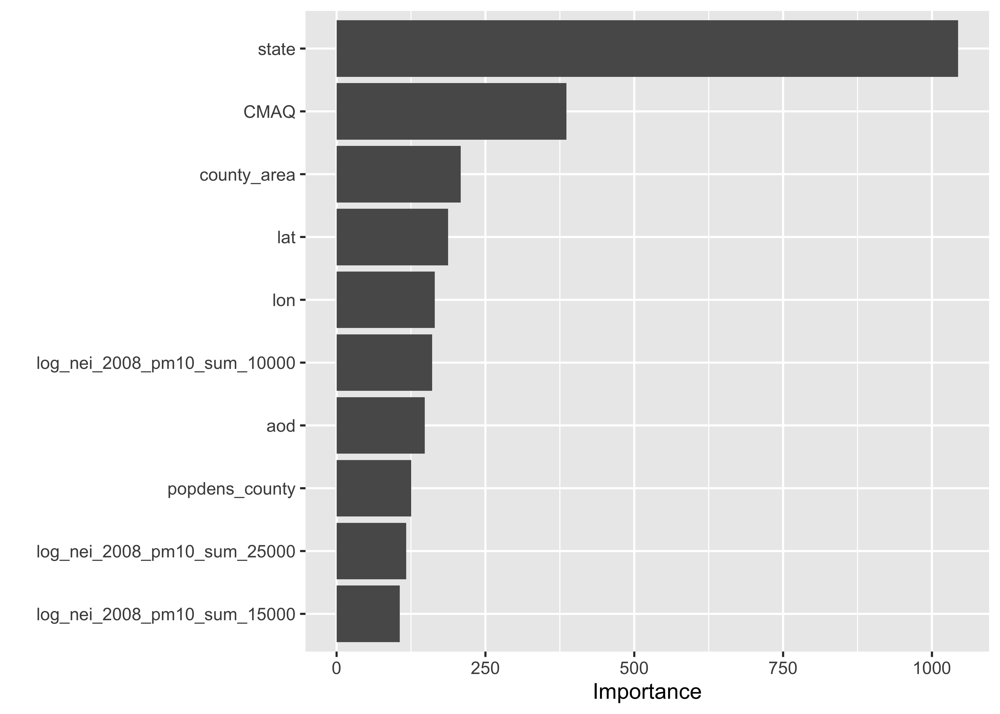
- For
randomForest, importance = how much splitting on that variable reduces prediction error, added up across all the trees - Again: what the model relies on, not what causes pollution
❓ What’s your interpretation of these results?
Assess Model Performance
set.seed(456)
resample_RF_fit <- tune::fit_resamples(RF_wflow, vfold_pm)
# side by side: linear regression vs. random forest (same folds)
bind_rows(
collect_metrics(resample_fit) |> mutate(model = "linear regression"),
collect_metrics(resample_RF_fit) |> mutate(model = "random forest")
) |>
select(model, .metric, mean, std_err)# A tibble: 4 × 4
model .metric mean std_err
<chr> <chr> <dbl> <dbl>
1 linear regression rmse 2.12 0.0402
2 linear regression rsq 0.306 0.0253
3 random forest rmse 1.67 0.101
4 random forest rsq 0.591 0.0514❓ Thoughts on which model better achieves our goal?
Model Tuning
Hyperparameters are often things that we need to specify about a model. Instead of arbitrarily specifying this, we can try to determine the best option for model performance by a process called tuning.
. . .
Rather than specifying values, we can use tune():
tune_RF_model <- rand_forest(mtry = tune(), min_n = tune()) |>
set_engine("randomForest") |>
set_mode("regression")
tune_RF_modelRandom Forest Model Specification (regression)
Main Arguments:
mtry = tune()
min_n = tune()
Computational engine: randomForest . . .
Create Workflow:
RF_tune_wflow <- workflows::workflow() |>
workflows::add_recipe(RF_rec) |>
workflows::add_model(tune_RF_model)
RF_tune_wflow══ Workflow ══════════════════════════════════════════════════════════
Preprocessor: Recipe
Model: rand_forest()
── Preprocessor ──────────────────────────────────────────────────────
5 Recipe Steps
• step_rm()
• step_novel()
• step_string2factor()
• step_nzv()
• step_corr()
── Model ─────────────────────────────────────────────────────────────
Random Forest Model Specification (regression)
Main Arguments:
mtry = tune()
min_n = tune()
Computational engine: randomForest Detect how many cores you have access to:
# availableCores() respects limits on shared servers like DataHub
# (parallel::detectCores() reports the whole machine)
n_cores <- future::availableCores()
n_coressystem
10 . . .
This code will take some time to run:
# install.packages("future")
# run the tuning in parallel
future::plan("multisession", workers = n_cores)
set.seed(123)
tune_RF_results <- tune_grid(object = RF_tune_wflow, resamples = vfold_pm, grid = 20)
# back to running one thing at a time
future::plan("sequential")grid = 20: try 20 combinations ofmtryandmin_n. Each is fit on all 4 folds: that’s 80 random forests (hence the wait!)
Note: older guides use doParallel::registerDoParallel(); tune no longer supports that approach (as of v2.0).
Check Metrics:
# RMSE for each combination of mtry and min_n we tried
autoplot(tune_RF_results, metric = "rmse")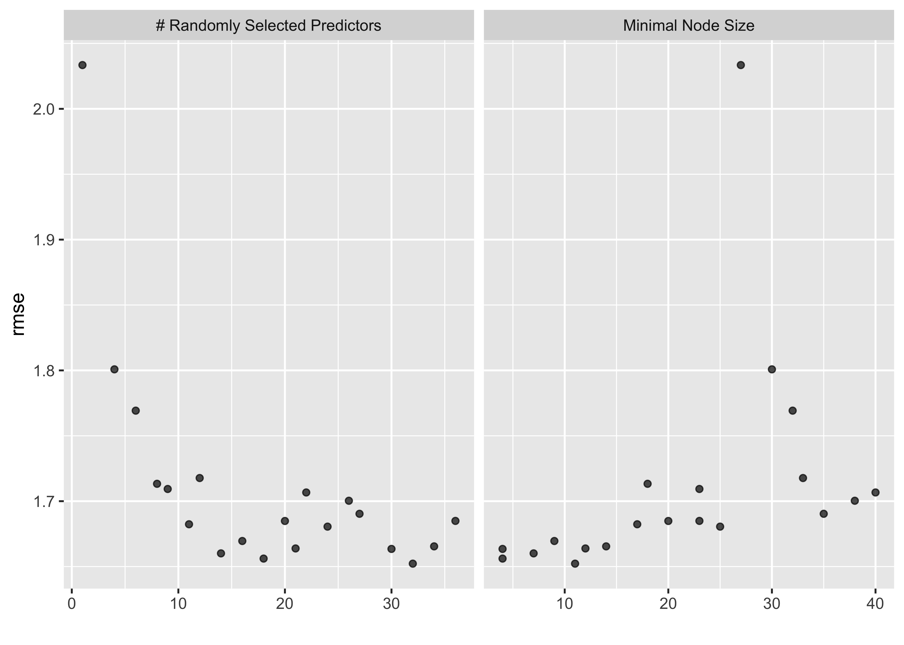
Best Combinations
show_best(tune_RF_results, metric = "rmse", n = 5)# A tibble: 5 × 8
mtry min_n .metric .estimator mean n std_err .config
<int> <int> <chr> <chr> <dbl> <int> <dbl> <chr>
1 32 11 rmse standard 1.65 4 0.113 Preprocessor1_Mo…
2 18 4 rmse standard 1.66 4 0.116 Preprocessor1_Mo…
3 14 7 rmse standard 1.66 4 0.102 Preprocessor1_Mo…
4 30 4 rmse standard 1.66 4 0.118 Preprocessor1_Mo…
5 21 12 rmse standard 1.66 4 0.106 Preprocessor1_Mo…Final Model Evaluation
tuned_RF_values <- select_best(tune_RF_results, metric = "rmse")
tuned_RF_values# A tibble: 1 × 3
mtry min_n .config
<int> <int> <chr>
1 32 11 Preprocessor1_Model10. . .
The testing data!
# specify best combination from tune in workflow
RF_tuned_wflow <- RF_tune_wflow |>
tune::finalize_workflow(tuned_RF_values)
# fit on ALL the training data, then evaluate ONCE on the test data
overallfit <- RF_tuned_wflow |>
tune::last_fit(pm_split)
collect_metrics(overallfit)# A tibble: 2 × 4
.metric .estimator .estimate .config
<chr> <chr> <dbl> <chr>
1 rmse standard 1.83 Preprocessor1_Model1
2 rsq standard 0.533 Preprocessor1_Model1- We picked the best of 20 CV scores, so that score is probably a little lucky: a slightly worse test RMSE is normal
❓ Test RMSE is 1.83; the tuned model’s cross-validated RMSE was 1.65. How do they compare? What would it mean if they were close? Far apart?
. . .
Getting the predictions for the test data:
test_predictions <- collect_predictions(overallfit)Is that good? For whom?
- Baseline: predicting every monitor with the overall mean gives RMSE ≈ 2.54; our tuned random forest gets 1.83 on the test set
- Real-world stakes: in 2024, EPA lowered the health-based annual PM2.5 standard from 12.0 to 9.0 µg/m³
- About 36% of monitors in our data read within 1.8 µg/m³ of 9. For those places, an error the size of our RMSE could flip “meets the standard” to “doesn’t”
❓ Is this model accurate enough? For a regulator deciding compliance? For a researcher estimating exposure across the country?
Visualizing our results
A map of the US
Packages needed:
sf- the simple features package helps to convert geographical coordinates intogeometryvariables which are useful for making 2D plotsmaps- this package contains geographical outlines and plotting functions to create plots with mapsrnaturalearth- this allows for easy interaction with map data from Natural Earth which is a public domain map dataset
library(sf)
library(maps)
library(rnaturalearth)Outline of the US
world <- ne_countries(scale = "medium", returnclass = "sf")
world |> select(name, geometry) |> head(3)Simple feature collection with 3 features and 1 field
Geometry type: MULTIPOLYGON
Dimension: XY
Bounding box: xmin: -70.06611 ymin: -18.01973 xmax: 74.89131 ymax: 38.4564
Geodetic CRS: +proj=longlat +datum=WGS84 +no_defs +ellps=WGS84 +towgs84=0,0,0
name geometry
0 Aruba MULTIPOLYGON (((-69.89912 1...
1 Afghanistan MULTIPOLYGON (((74.89131 37...
2 Angola MULTIPOLYGON (((14.19082 -5...World map:
ggplot(data = world) +
geom_sf() 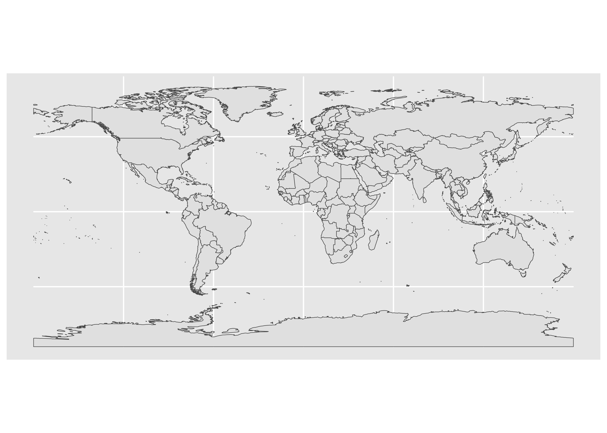
Just the US
According to this link, these are the latitude and longitude bounds of the continental US:
- top = 49.3457868 # north lat
- left = -124.7844079 # west long
- right = -66.9513812 # east long
- bottom = 24.7433195 # south lat
Just the US
ggplot(data = world) +
geom_sf() +
coord_sf(xlim = c(-125, -66), ylim = c(24.5, 50),
expand = FALSE)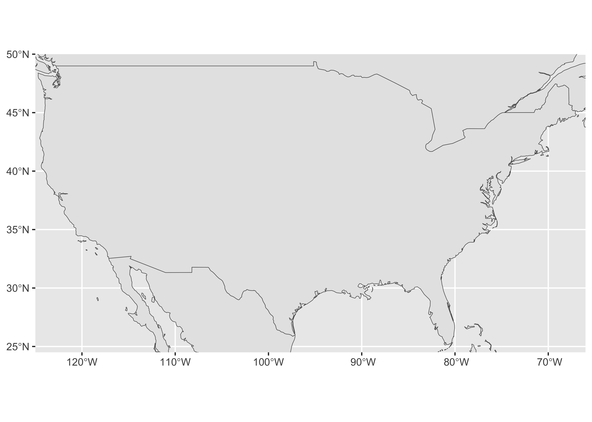
Monitor Data
Adding in our monitors…
ggplot(data = world) +
geom_sf() +
coord_sf(xlim = c(-125, -66), ylim = c(24.5, 50),
expand = FALSE)+
geom_point(data = pm, aes(x = lon, y = lat), size = 2,
shape = 23, fill = "darkred")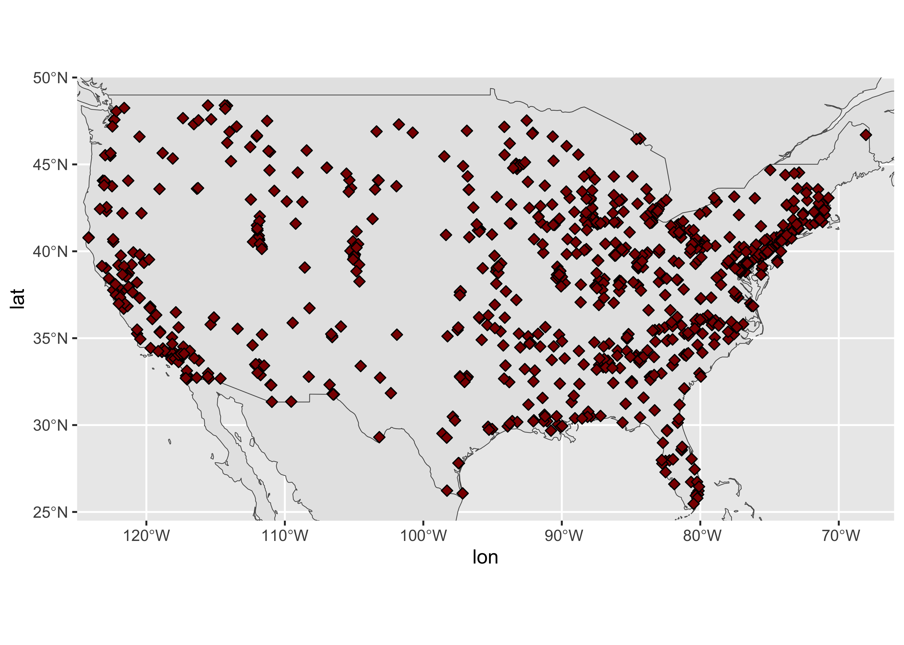
County Lines
Adding in county lines
counties <- sf::st_as_sf(maps::map("county", plot = FALSE,
fill = TRUE))
head(counties, 3)Simple feature collection with 3 features and 1 field
Geometry type: MULTIPOLYGON
Dimension: XY
Bounding box: xmin: -88.01778 ymin: 30.24071 xmax: -85.06131 ymax: 32.71016
Geodetic CRS: +proj=longlat +ellps=clrk66 +no_defs +type=crs
ID geom
alabama,autauga alabama,autauga MULTIPOLYGON (((-86.50517 3...
alabama,baldwin alabama,baldwin MULTIPOLYGON (((-87.93757 3...
alabama,barbour alabama,barbour MULTIPOLYGON (((-85.42801 3...The Map
monitors <- ggplot(data = world) +
geom_sf(data = counties, fill = NA, color = gray(.5))+
coord_sf(xlim = c(-125, -66), ylim = c(24.5, 50),
expand = FALSE) +
geom_point(data = pm, aes(x = lon, y = lat), size = 2,
shape = 23, fill = "darkred") +
ggtitle("Monitor Locations") +
theme(axis.title.x=element_blank(),
axis.text.x = element_blank(),
axis.ticks.x = element_blank(),
axis.title.y = element_blank(),
axis.text.y = element_blank(),
axis.ticks.y = element_blank())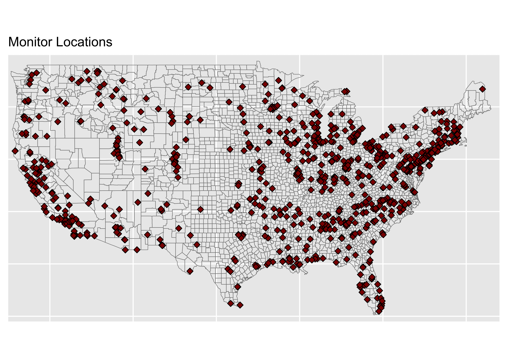
Counties
Wrangle counties:
- separate county and state into separate columns
- build a matching key from state + county (county names repeat across states: 30+ states have a Washington County!)
- average the monitors within each county (160 counties have more than one)
# lower case, letters only, "saint" -> "st", so "St. Lucie" matches "st lucie"
county_key <- function(state, county) {
county <- county |>
str_to_lower() |>
str_remove(":.*") |> # maps splits some counties into parts
str_replace("^saint", "st") |>
str_remove_all("[^a-z]")
paste(str_to_lower(state), county, sep = ",")
}
counties <- counties |>
tidyr::separate(ID, into = c("state", "county"), sep = ",") |>
mutate(key = county_key(state, county))
county_truth <- pm |>
mutate(key = county_key(state, county)) |>
group_by(key) |>
summarize(value = mean(value))
# left_join keeps every county; counties without a monitor get NA (shown in grey)
map_data <- left_join(counties, county_truth, by = "key")❓ What would go wrong if we joined on county alone?
Map: Truth
# shared styling for our PM2.5 maps
states <- sf::st_as_sf(maps::map("state", plot = FALSE, fill = TRUE))
pm_scale <- scale_fill_viridis_c(option = "magma", direction = -1,
limits = c(0, 23.5), na.value = "grey92",
name = "PM2.5\n(µg/m³)")
map_style <- list(
geom_sf(data = states, fill = NA, color = "grey50", linewidth = 0.2),
coord_sf(crs = 5070), # equal-area projection: the US looks like the US
theme_void(),
theme(plot.title = element_text(face = "bold"))
)
truth <- ggplot() +
geom_sf(data = map_data, aes(fill = value), color = NA) +
pm_scale +
map_style +
ggtitle("Measured", subtitle = "grey = no monitor")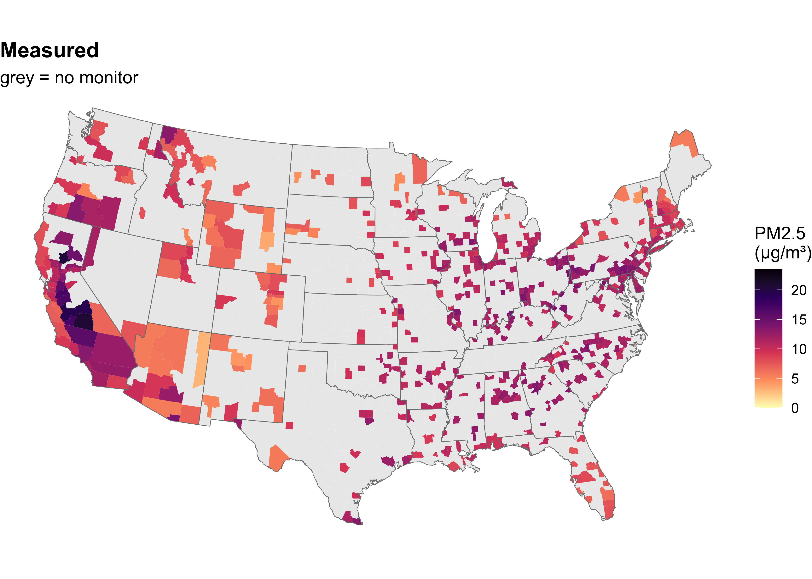
Map: Predictions
Every monitor gets a prediction from a model that never saw it:
# training monitors: out-of-fold predictions from cross-validation
# (.row = row number in train_pm)
set.seed(456)
cv_preds <- fit_resamples(RF_tuned_wflow, vfold_pm,
control = control_resamples(save_pred = TRUE)) |>
collect_predictions()
train_preds <- train_pm |>
mutate(.row = row_number()) |>
inner_join(select(cv_preds, .row, .pred), by = ".row")
# test monitors: predictions from last_fit() (.row = row number in pm)
test_preds <- pm |>
mutate(.row = row_number()) |>
inner_join(select(test_predictions, .row, .pred), by = ".row")
# combine and average within county
county_pred <- bind_rows(train_preds, test_preds) |>
mutate(key = county_key(state, county)) |>
group_by(key) |>
summarize(.pred = mean(.pred))Note: don’t predict the training data with a model fit to the training data (or the test data with a model fit to the test data). Those predictions look great…because the model has already seen the answers.
map_data <- left_join(counties, county_pred, by = "key")
pred <- ggplot() +
geom_sf(data = map_data, aes(fill = .pred), color = NA) +
pm_scale +
map_style +
ggtitle("Predicted", subtitle = "by a model that never saw that monitor")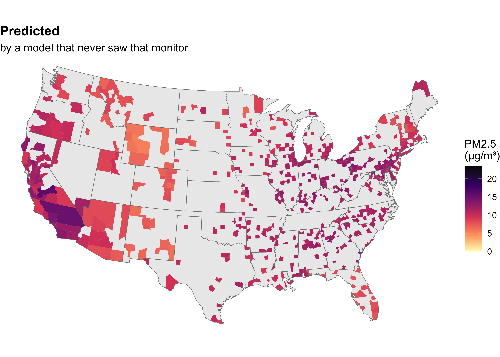
Map: Where the model misses
county_resid <- inner_join(county_truth, county_pred, by = "key") |>
mutate(resid = .pred - value)
map_data <- left_join(counties, county_resid, by = "key")
resid <- ggplot() +
geom_sf(data = map_data, aes(fill = resid), color = NA) +
scale_fill_distiller(palette = "RdBu", limits = c(-5, 5),
oob = scales::squish, na.value = "grey92",
name = "Predicted −\nmeasured\n(µg/m³)") +
map_style +
ggtitle("Where the model misses", subtitle = "red = too high, blue = too low")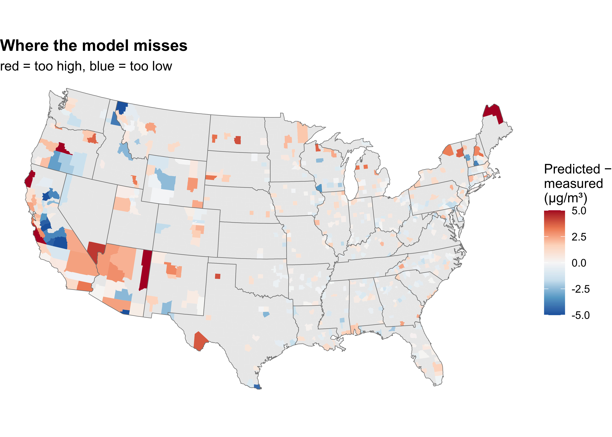
- Red: the model predicted too high; blue: too low (misses beyond ±5 µg/m³ get the darkest color)
❓ Do the misses look random, or are there regional patterns? What might explain them?
Final Plot
library(patchwork)
final_plot <- (truth | pred | resid) +
plot_layout(guides = "collect") +
plot_annotation(title = "Machine Learning Methods Allow for Prediction of Air Pollution", subtitle = paste0("A random forest model predicts annual fine particulate matter (PM 2.5) levels at monitors it was not trained on to within\nabout ", round(test_rmse, 1), " ug/m3 on average (test RMSE), using population density, emissions, and other predictors. Similar methods\ncould help estimate pollution in places with poor monitoring."),
theme = theme(plot.title = element_text(size =12, face = "bold"),
plot.subtitle = element_text(size = 8))) &
theme(legend.position = "bottom")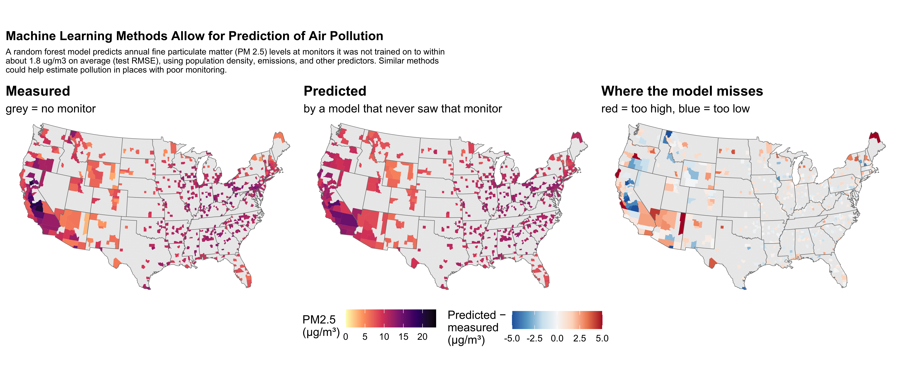
❓ What do you learn from these results?
Your Case Study
- Can you copy + paste code directly from here to answer the question? Yes.
- Do you have to present linear regression model and random forest? No.
- Should you present anything from the 13-regression notes? Probably not…unless your extension asks an inference-based question. (This is why lab07 focused on regression.)
- Could you try an additional model as your extension? Yes!
- Does that model have to be “better”? No! But, consider the story!
- Could you try to identify the simplest, accurate model as an extension? Yes.